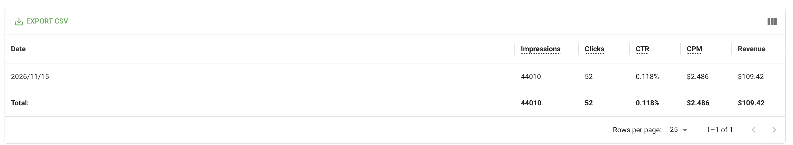

2026 年 11 月 15 日的群聊里，两个案例给出同一个信号：新词站的流量不再需要等 Google 收录后慢慢起量。一个是发现热点词后当天开发上线的小游戏站，30 分钟内进来 24 个美国访问；一个是提前两周布好的 Roblox 游戏 wiki，游戏正式发布当天 adsterra 收入 109.42 美元。
从热点词到上线：30 分钟 24 个美国访问
瀞用新词数据服务发现一个小游戏方向的热点词：这个词之前还是地平线，这两天开始直线上升、超过 gpts。他当天注册 .com 域名，快速开发并上线了一个小游戏网站。更意外的是 Google 还没有收录，接入 Analytics 后就已经有访问——上线 30 分钟内有 24 个访问来自美国用户。
群友 co松柏 先问做的是在线小游戏还是资讯类，瀞确认是在线小游戏。Huxley_嘉亮 把原因归为「新词的魔力」，瀞的对比很直接：以前上站要等好久，统计里才慢慢有流量；现在一上线就有流量。
提前两周布站：Roblox wiki 在游戏发布日兑现
哥飞贴的是另一种节奏：一个 Roblox 游戏 wiki 站，网站已经上线两周，游戏今天凌晨 3 点正式发布。光是今天，到截图时 adsterra 已经 100 多美元，域名只花了 3 美元。

后台截图里的数字：2026 年 11 月 15 日当天展示 44,010 次、点击 52 次、CTR 0.118%、CPM 2.486 美元，收入 109.42 美元。点击率只有 0.118%，但收入已经是 3 美元域名成本的 36 倍多。
这两段对话能带走的
- 新词的窗口期在上线当天就能兑现：Google 还没收录，访问已经进来了，不需要等收录和排名慢慢起量。
- 两种节奏：瀞是发现热点词后当天注册域名、快速开发上线；哥飞是提前两周把 Roblox wiki 布好，等游戏正式发布当天吃流量。
- 热点词落到什么站型，是群里第一个被追问的问题：co松柏 先确认瀞做的是在线小游戏，而不是资讯站。
- 成本可以很低：一个 3 美元的域名，站上线两周，游戏发布当天 adsterra 收入 109.42 美元。
原始对话
这份导出含两段转发：2026 年 11 月 15 日哥飞转发的热点词对话（8 条），以及 2026 年 11 月 14 日 Wesley Z 那组新词内页数据（9 条）。后一段与已发布的《新词内页一天 2000 流量：是主词的 10 倍，几小时上首页》重复，已在那篇里完整收录；这里按导出原样保留对话，正文不再重复解读。